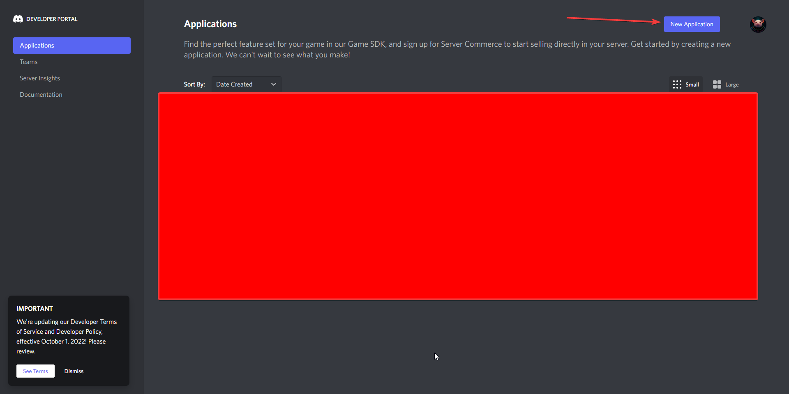
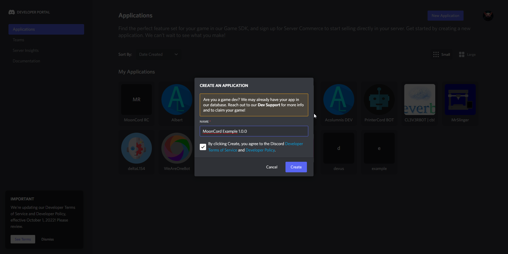
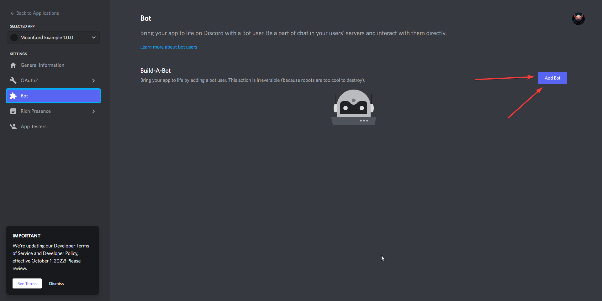
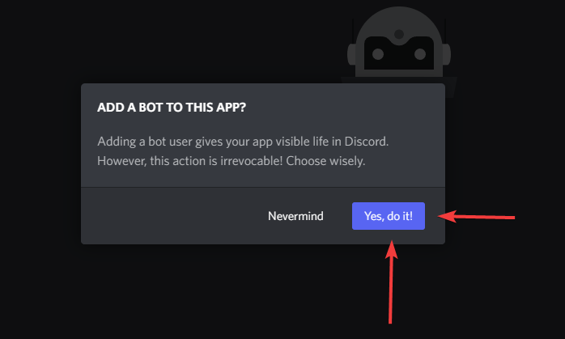
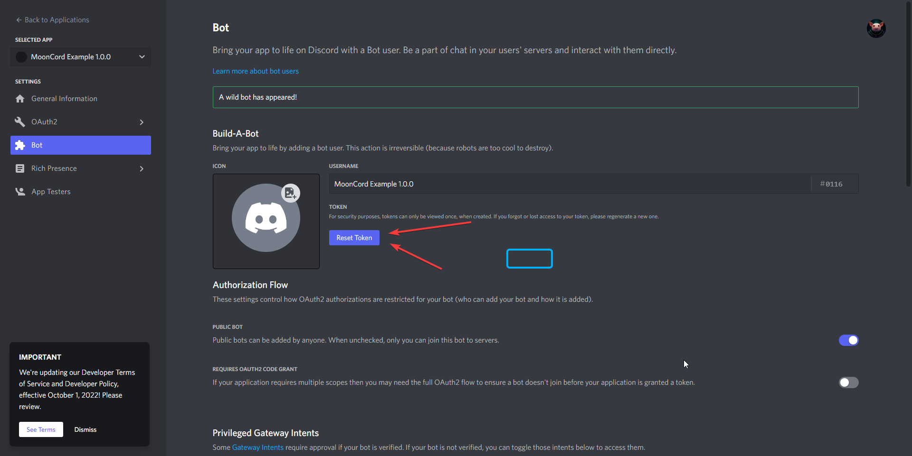
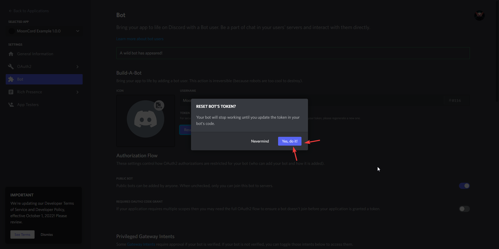
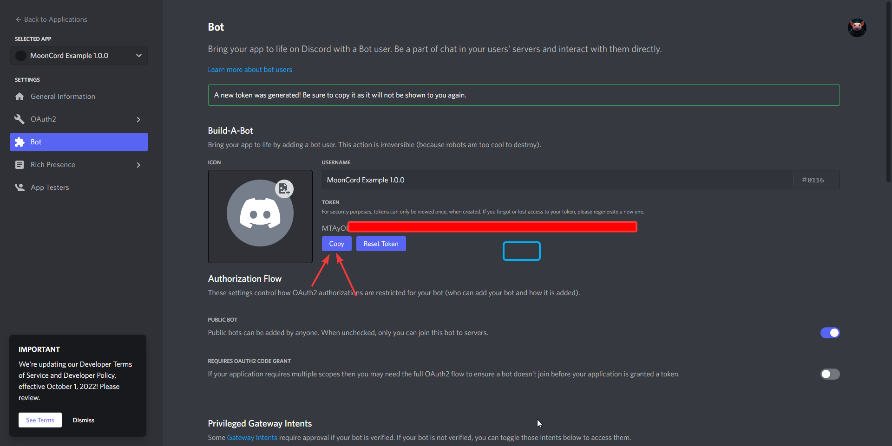
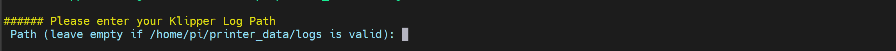
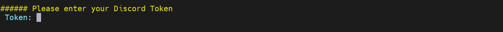

Installation
Preparations
Required Preparations to install MoonCord
Install Git first
sudo apt update
sudo apt upgrade
sudo apt install git
Create Discord Application
go to the Discord Application Page and create a new Application. 
Name your application: 
create a bot:  
reset the bot tokeen (you will need the token later in the install script):  
copy the bot token for later, you will need it later for the install script. 
Install script
Download MoonCord and start the install script
cd ~/
git clone https://github.com/eliteSchwein/mooncord.git
cd ~/mooncord
bash scripts/install.sh
Now follow the install script, below are screenshots with some explanation what the questions mean.
 enter the absolut path to your config directory of your klipper installation, when you have a normal mainsailos you can leave this empty.
enter the absolut path to your config directory of your klipper installation, when you have a normal mainsailos you can leave this empty.
 enter the absolut path to your logs directory of your klipper installation, when you have a normal mainsailos you can leave this empty.
 enter your Discord Bot Token from Create Discord Application